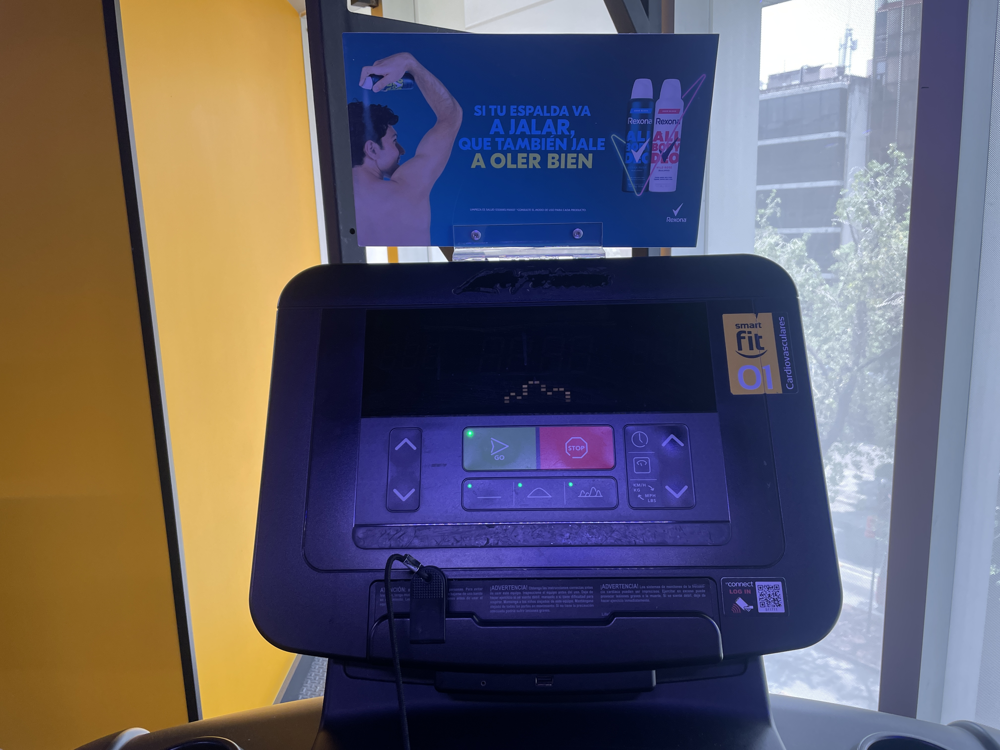
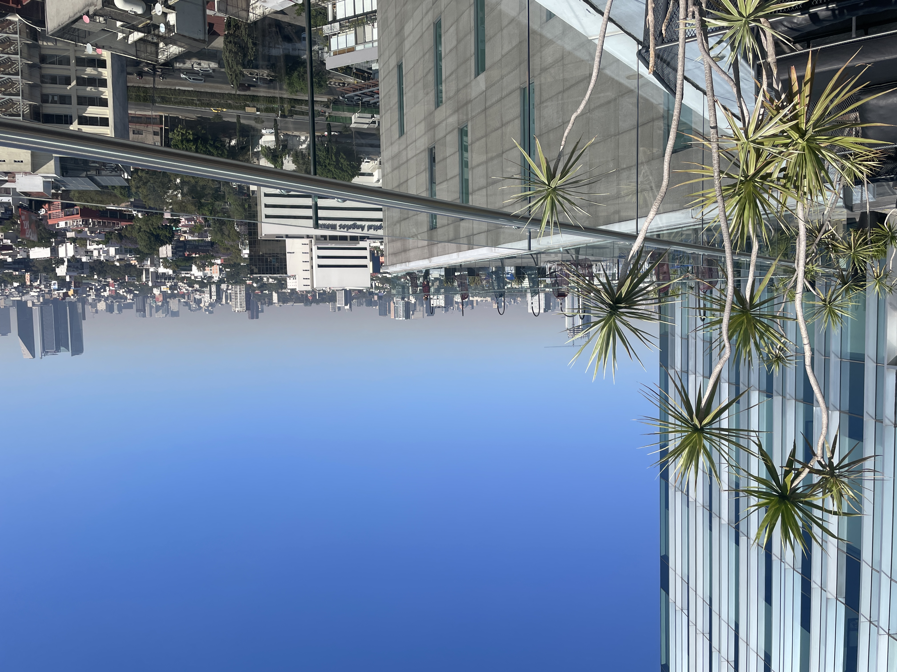
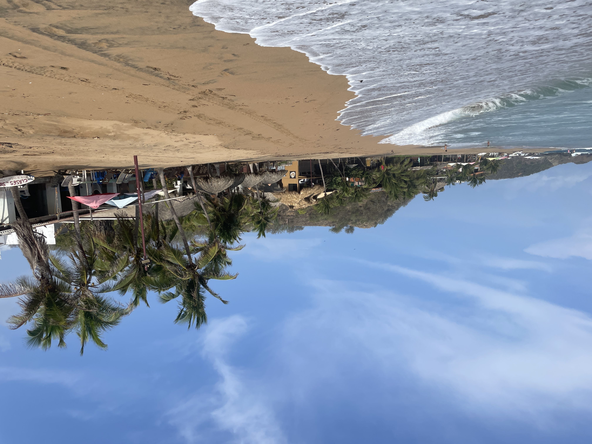

23 Leven in
een vissenkom
Waar kan ik hier rustig wonen?,
Een integratie die maar niet wil lukken,
het expat omslagpunt.


Burro in het Spaans betekent ‘Ezel’. De burrito komt nauwelijks in Mexico Stad voor omdat het ontstaan is op het platteland in het noorden van Mexico waar ze de mensen “Northenios” noemen. Na een lange dag werken op het land kwamen de boerinnen eten brengen. Dit waren de wraps gevuld met groenten, rijst en vlees, die werden gebracht met de ezel. “Daar heb je de burrito!" zei de boer dan, waarmee de naam voor het gerecht was geboren.
 Het is al even geleden, de laatste blog, en zelfs vanuit het thuisfront kwamen er wat berichtjes over dat er al even geen blog meer was geweest en daarmee natuurlijk ook de vraag of het allemaal nog wel goed ging. Ik moet nog even nadenken waar we gebleven waren, maar nu schiet het me weer te binnen, na al die wisselingen: bezoek aan Nederland, start in Mexico, terug naar Paraguay, Na iedere maand een ander land, was het idee om stabiliteit te vinden in Mexico Stad. In januari nog was ik heel tevreden met de Bittensor verdiensten die ik zonder al te veel onderhoud op peil wist te houden tijdens het backpacken. Echter in maart sloeg het helemaal om doordat onze munt, de Tao, kelderde naar een dieptepunt terwijl hij vorig jaar nog vele malen meer waard was geweest en ik dacht de koning te rijk te zijn. In deze periode had ik een erg mooi appartement in wijk Roma Norte in Mexico stad, waar ik het eigenlijk helemaal niet zo naar mijn zin had, door de verschrikkelijke commercie en het gebrek aan eenvoudige eetmogelijkheden. Door deze dalende Tao kwam daar dus ook nog eens financiële zorg bij. Omdat de mensen met wie ik op Bittensor in contact ben altijd zo lovend zijn over de toekomst van het platform en daarmee dus ook de munt, had ik deze enorme daling niet zien aankomen. Had ik dit op tijd geweten, dan had ik er op zijn minst al eens een paar kunnen omwisselen voor regulier geld, wat natuurlijk veel stabieler is. Een wijze les voor de toekomst. Ik bel mijn broertje Sander en mam op en ik vertel dat er niets anders op zit dan een poosje in een hostel te gaan wonen. De borg die ik nog terugkrijg van de man van het luxe appartement zal nooit op mijn rekening in Nederland aankomen en 3 weken lang zijn we dagelijks aan het bellen en mailen om uit te zoeken waar het gebleven is. Het hostel is al mijn derde woonplek in Mexico Stad. En hoewel verhuizen niet ideaal is, is het een geluk dat je door al het verkassen in ieder geval Mexico Stad wel steeds wat beter leert kennen. Het bevalt zo slecht nog niet af en toe een praatje maken met een van de 7 andere reizigers op de kamer. Er is een coworking ruimte en daar ben ik het grootste gedeelte van de week te vinden, op een avond na waarop ik me schaar tussen de backpackers en we samen een feestje bezoeken.
Het is al even geleden, de laatste blog, en zelfs vanuit het thuisfront kwamen er wat berichtjes over dat er al even geen blog meer was geweest en daarmee natuurlijk ook de vraag of het allemaal nog wel goed ging. Ik moet nog even nadenken waar we gebleven waren, maar nu schiet het me weer te binnen, na al die wisselingen: bezoek aan Nederland, start in Mexico, terug naar Paraguay, Na iedere maand een ander land, was het idee om stabiliteit te vinden in Mexico Stad. In januari nog was ik heel tevreden met de Bittensor verdiensten die ik zonder al te veel onderhoud op peil wist te houden tijdens het backpacken. Echter in maart sloeg het helemaal om doordat onze munt, de Tao, kelderde naar een dieptepunt terwijl hij vorig jaar nog vele malen meer waard was geweest en ik dacht de koning te rijk te zijn. In deze periode had ik een erg mooi appartement in wijk Roma Norte in Mexico stad, waar ik het eigenlijk helemaal niet zo naar mijn zin had, door de verschrikkelijke commercie en het gebrek aan eenvoudige eetmogelijkheden. Door deze dalende Tao kwam daar dus ook nog eens financiële zorg bij. Omdat de mensen met wie ik op Bittensor in contact ben altijd zo lovend zijn over de toekomst van het platform en daarmee dus ook de munt, had ik deze enorme daling niet zien aankomen. Had ik dit op tijd geweten, dan had ik er op zijn minst al eens een paar kunnen omwisselen voor regulier geld, wat natuurlijk veel stabieler is. Een wijze les voor de toekomst. Ik bel mijn broertje Sander en mam op en ik vertel dat er niets anders op zit dan een poosje in een hostel te gaan wonen. De borg die ik nog terugkrijg van de man van het luxe appartement zal nooit op mijn rekening in Nederland aankomen en 3 weken lang zijn we dagelijks aan het bellen en mailen om uit te zoeken waar het gebleven is. Het hostel is al mijn derde woonplek in Mexico Stad. En hoewel verhuizen niet ideaal is, is het een geluk dat je door al het verkassen in ieder geval Mexico Stad wel steeds wat beter leert kennen. Het bevalt zo slecht nog niet af en toe een praatje maken met een van de 7 andere reizigers op de kamer. Er is een coworking ruimte en daar ben ik het grootste gedeelte van de week te vinden, op een avond na waarop ik me schaar tussen de backpackers en we samen een feestje bezoeken.
 Zodra ik net was ingetrokken in het hostel, veranderde alles natuurlijk weer, typisch voor dit onvoorspelbare bestaan. En dus durf ik het wel aan om het low-budget hostel te verlaten en toch op zoek te gaan naar iets structureels. Misschien geen paleisje meer voor mezelf, maar ook geen hostel. De middenweg is een airbnb in een gedeeld appartement. Iets meer lokaal, maar vooral ook niet te lokaal, en op loopafstand naar Park Mexico voor de bachata feestjes. Dit bracht mij naar de wijk Escandon, grenzend aan de populaire wijk Condessa. Ik moet op de een of andere manier sowieso nog heel erg wennen aan de mensen hier, die ik niet altijd goed begrijp, maar ik heb wel het idee dat ik hier in ieder geval een heel stuk beter zit dan op de vorige 3 plekken.
Zodra ik net was ingetrokken in het hostel, veranderde alles natuurlijk weer, typisch voor dit onvoorspelbare bestaan. En dus durf ik het wel aan om het low-budget hostel te verlaten en toch op zoek te gaan naar iets structureels. Misschien geen paleisje meer voor mezelf, maar ook geen hostel. De middenweg is een airbnb in een gedeeld appartement. Iets meer lokaal, maar vooral ook niet te lokaal, en op loopafstand naar Park Mexico voor de bachata feestjes. Dit bracht mij naar de wijk Escandon, grenzend aan de populaire wijk Condessa. Ik moet op de een of andere manier sowieso nog heel erg wennen aan de mensen hier, die ik niet altijd goed begrijp, maar ik heb wel het idee dat ik hier in ieder geval een heel stuk beter zit dan op de vorige 3 plekken.
 De pogingen om de vriendschap met Ernesto in stand te houden verlopen moeizaam. Het is misschien wel voor het eerst dat ik denk met iemand op deze reis goede vrienden te worden, maar om het voor elkaar te krijgen dat we elkaar eens zien, moeten er een heleboel appjes op en neer gaan, en hoe gezellig dat appen ook is, zodra je wat probeert af te spreken, “oke vrijdag dan om 20.00?”, dan op miraculeuze wijze neemt het gesprek een andere wending. Je hebt dan 20 minuten op je telefoon gezeten en waarvoor je hem eigenlijk pakte, om iets af te spreken is niet gelukt. Misschien ben ik wel erg zakelijk, of ja “koud” zoals de mensen hier weleens zeggen, maar ik vind het zo zinloos om zoveel tijd aan het appen te zijn en ik begrijp niet dat andere mensen daar wel van houden. Zo heb ik bijvoorbeeld ook geen tik tok en kijk ik ook geen reels. We krijgen al zo veel prikkels binnen. Laatst was ik mijn conditie op pijl aan het proberen te houden bij sportschool Smartfit waar ik een abonnement heb. Op de lopende band hadden ze een reclamebord gemonteerd zodat je pal tegen een bord met Dove deodorant aan zit te kijken. Hoe kunnen we mensen tot op het bot bestoken met reclame? Of mogen mensen ook heel even voor zich uit kunnen staren?
De pogingen om de vriendschap met Ernesto in stand te houden verlopen moeizaam. Het is misschien wel voor het eerst dat ik denk met iemand op deze reis goede vrienden te worden, maar om het voor elkaar te krijgen dat we elkaar eens zien, moeten er een heleboel appjes op en neer gaan, en hoe gezellig dat appen ook is, zodra je wat probeert af te spreken, “oke vrijdag dan om 20.00?”, dan op miraculeuze wijze neemt het gesprek een andere wending. Je hebt dan 20 minuten op je telefoon gezeten en waarvoor je hem eigenlijk pakte, om iets af te spreken is niet gelukt. Misschien ben ik wel erg zakelijk, of ja “koud” zoals de mensen hier weleens zeggen, maar ik vind het zo zinloos om zoveel tijd aan het appen te zijn en ik begrijp niet dat andere mensen daar wel van houden. Zo heb ik bijvoorbeeld ook geen tik tok en kijk ik ook geen reels. We krijgen al zo veel prikkels binnen. Laatst was ik mijn conditie op pijl aan het proberen te houden bij sportschool Smartfit waar ik een abonnement heb. Op de lopende band hadden ze een reclamebord gemonteerd zodat je pal tegen een bord met Dove deodorant aan zit te kijken. Hoe kunnen we mensen tot op het bot bestoken met reclame? Of mogen mensen ook heel even voor zich uit kunnen staren?
Het getreuzel op straat zal ik in ieder geval niet gaan missen. Mensen die 5 honden uitlaten en de halve straat in beslag nemen, en dan ook nog eens op de telefoon zitten. Noodgedwongen liep ik vaak meer op straat dan op de stoep. Is het in Nederland op straat ook zo erg met de mobieltjes? Oef, ik hoop het niet. Steeds opnieuw sta je met verbazing te kijken wat er hier allemaal gebeurt. Je vraagt aan iemand de naam van een winkel, en nog voordat je je vraag hebt afgemaakt, krijg je al een “¿mande?” terug wat “wat zeg je?” betekent, maar het wordt hier zo vaak en automatisch gezegd dat het soms voelt alsof ze het al roepen nog voordat ze überhaupt hebben geluisterd. Je besluit toch maar de richting op te gaan die je dacht te horen, en vraagt het voor de zekerheid nog aan iemand anders. Die wijst vervolgens compleet de andere kant op. Dan zeg je: “Huh, ik dacht eerlijk gezegd dat het meer die andere kant op was.” Waarop de persoon zegt: “O ja, je hebt helemaal gelijk, het is daar.” Muzikanten springen voor je neus en voeren de druk op om je te laten betalen. Fooi is in plaats van een vrijwillige bijdrage een percentage wat begint bij 10%. Je geeft het meer omdat het zo hoort, dan dat je het geeft omdat je er echt van hebt genoten. Ik koop een nieuwe oplaadkabel en de verkoper zegt naderhand zonder schaamte “Als je een 5 sterren review zou kunnen schrijven alvast heel erg bedankt”. Een taxi chauffeur heeft de muziek loeihard aanstaan, iemand anders probeert mijn cijferslot bij de Smartfit te veranderen. Iedere keer sta ik toch weer een beetje perplex. Is het echt zo veel gevraagd om gewoon een beetje normaal te doen? Na vier maanden dansen in park mexico stuur ik een berichtje aan de organisator of hij mij in de appgroep zou willen toevoegen. Ik stuur een enthousiast berichtje en geloof het of niet, er kan niet eens een berichtje terug vanaf. Zo’n kleine moeite om even te zeggen, “Leuk, welkom!” het zou zo’n groot verschil maken. Wat dat betreft is er veel meer in hiërarchie en is het ook een beetje zien en gezien worden en mensen zijn heel kieskeurig met wie ze allemaal optrekken en ook dansen. Zelf ben ik veel meer iemand die gewoon met iedereen een dansje maakt, zelfs al komt iemand voor de eerste keer. Misschien hoort dat wel bij de bij grote stad, dat het gewoon zo groot is dat je in bepaalde bubbels leeft. Je zegt een keer hoi en je krijgt er geen terug. Of er wordt juist verwacht dat je hoi zegt maar je zegt geen hoi, je weet op een gegeven moment niet meer waar je goed aan doet. Toen ik taco ging bestellen en wilde afrekenen zei ik, "Oei, wel een beetje pittig”, waar die man helemaal niet op reageerde. Als je voor het eerst in Mexico Stad komt en dat meemaakt dan schrik je wel dat je zo genegeerd wordt terwijl je aardig probeert te zijn. Maar op een gegeven moment leerde ik om zulke momenten gewoon heel snel naast me neer te leggen.
 Vanuit de nieuwe wijk bezoek ik ook een nieuwe WeWork locatie, genaamd Insurgentes. Het is er een beestenbende. Er staat muziek aan, mensen komen met de hond, en de persoon tegenover mij drinkt bier tijdens het werken. Mensen uit de gangen komen massaal pauze houden in de gemeenschappelijke ruimtes waar ik op ben aangewezen. Je kan maar beter niet laten merken dat je je eraan stoort, want soms heb ik het idee dat als mensen dat doorhebben dat ze er nog een schepje bovenop doen. Ik kom aan om te werken en er is een Gay pride feest. Ik ben er wel een heel klein beetje klaar mee met nooit weten waar je aan toe bent. Terwijl ik aan het werk ben komt een meid naast me zitten. Ze pakt haar telefoon en gaat uren bellen om te vertellen dat ze goed is aangekomen. Vervolgens heeft ze een yogurt meegenomen en gaat ze ontbijten. Het is inmiddels eind van de ochtend, haar tas staat nog op het bureau en er ligt een schriftje en een pen waar nog altijd niets in is opgeschreven. Ik kan er echt met mijn pet niet bij hoe de instelling van sommige mensen hier is. Waarom kom je naar een kantoor als je vervolgens niets gaat doen?
Vanuit de nieuwe wijk bezoek ik ook een nieuwe WeWork locatie, genaamd Insurgentes. Het is er een beestenbende. Er staat muziek aan, mensen komen met de hond, en de persoon tegenover mij drinkt bier tijdens het werken. Mensen uit de gangen komen massaal pauze houden in de gemeenschappelijke ruimtes waar ik op ben aangewezen. Je kan maar beter niet laten merken dat je je eraan stoort, want soms heb ik het idee dat als mensen dat doorhebben dat ze er nog een schepje bovenop doen. Ik kom aan om te werken en er is een Gay pride feest. Ik ben er wel een heel klein beetje klaar mee met nooit weten waar je aan toe bent. Terwijl ik aan het werk ben komt een meid naast me zitten. Ze pakt haar telefoon en gaat uren bellen om te vertellen dat ze goed is aangekomen. Vervolgens heeft ze een yogurt meegenomen en gaat ze ontbijten. Het is inmiddels eind van de ochtend, haar tas staat nog op het bureau en er ligt een schriftje en een pen waar nog altijd niets in is opgeschreven. Ik kan er echt met mijn pet niet bij hoe de instelling van sommige mensen hier is. Waarom kom je naar een kantoor als je vervolgens niets gaat doen?
Op veel plekken waar ik kom krijg ik een verbaasde blik en zodra ik iets doe, is het al heel snel erg vreemd. Personeel bemoeit zich voortdurend met je, hoe je de roltrap opgaat, of je je pasje goed scant. De ene dag staan de pionnen voor het gebouw links en moet je langs rechts naar binnen en de andere dag staan de pionnen rechts en moet je langs links. 10 keer een doekje over hetzelfde muurtje. Een klus die je in 5 minuten kan doen, daar worden uren voor uitgetrokken en gaat gepaard met een enorm kabaal. Tot mijn grote verbazing lees ik dat Mexicaanse mensen nota bene de wereldwijde ranglijst aanvoeren als het gaat om mensen die het meest werken. Nou, ik heb er mijn vraagtekens bij. Wellicht wanneer je al het kletsen ook als werktijd rekent, maar ook op vrijdag 15.00 dan is er al helemaal niemand meer op kantoor. Ik moet er wel om grinniken want als er ook op maandag geen mensen op kantoor verschijnen en ik heb het erover met de schoonmaakster zegt ze “Op maandag leggen zelfs de kippen geen ei!”.
 Het is een verdienmodel, waarschijnlijk dat het zo onrustig is, dat mensen besluiten om dan maar een privé kantoor te gaan huren, zodat hier ook weer een duppie extra aan verdiend kan worden. Als oplossing tegen de herrie bezoek ik nog wat andere kantoren in de hoop dat het daar wat rustiger is, maar helaas. Ik heb misschien nog wel 6 andere kantoren bezocht, maar overal is het hetzelfde liedje. Ik wil me bijna eraan overgeven om dan maar bij WeWork een privé kantoor te nemen, een piepklein geïsoleerd kamertje op verdieping 19, maar besef me dat ik het ondanks alles eigenlijk ook gewoon wel gezellig vind om tussen de mensen te kunnen blijven werken. Dus koop ik een dure Bose koptelefoon met noise cancelling. Ik heb zelfs onlangs nog de nieuwste Apple Pods 2 pro gekocht met noise cancelling maar die bleken onvoldoende bestand tegen dit kabaal. Het is absurd dat ik ook nog eens deze aankoop ga doen, maar gezien alles wat ik al geprobeerd heb om het lawaai te dempen, denk ik dat een koptelefoon wellicht toch nog wat betere noise cancelling heeft dan de Apple earpods. Ik probeer de Bose koptelefoon uit maar helaas ben ik behoorlijk teleurgesteld over de kwaliteit van de noise cancelling. Maar dan bedenk ik me opeens dat het voordeel van de Bose headset is dat ik mijn slaapoordopjes kan combineren met de headset. Het blijkt een briljante oplossing. De dubbele geluidsbarrière geeft het gevoel alsof je in een vissenkom zit, niet echt prettig werken, maar in ieder geval efficiënt om het lawaai echt wat meer naar de achtergrond te brengen en de focus te kunnen leggen op het programmeren. Daarnaast doe ik nog een andere interessante ontdekking want omdat ik absurde uren achter mijn computer werk om het eerste jaar op Bittensor te overleven, wijst een hele vriendelijke medewerker van WeWork mij om 22.30 erop dat de verdieping gaat sluiten maar, dat ik eventueel ook op andere verdiepingen zou kunnen verderwerken. En zo kom ik er achter dat er ook nog andere verdiepingen bestaan, die ook niet echt rustig zijn, maar wel een stukje aangenamer en op zondag soms zelfs verlaten. Overdag glip ik naar de belhokjes op verdieping 14, daar word tenminste niet continu door voorbijlopers naar binnen gegluurd zoals op verdieping 19. Je kunt het licht uitdoen, een pet opzetten, maar echt helpen doet het allemaal nauwelijks. En dan, na 18.00 uur, als ik snak naar een normale stoel en de meeste mensen zijn vertrokken, verhuis ik naar verdieping 19 om daar de dag af te maken.. Het is, na eindeloos proberen, de minst verstorende route gebleken. Niet te bevatten, maar het is de enige manier waarop ik m’n werk nog een beetje gedaan krijg.
Het is een verdienmodel, waarschijnlijk dat het zo onrustig is, dat mensen besluiten om dan maar een privé kantoor te gaan huren, zodat hier ook weer een duppie extra aan verdiend kan worden. Als oplossing tegen de herrie bezoek ik nog wat andere kantoren in de hoop dat het daar wat rustiger is, maar helaas. Ik heb misschien nog wel 6 andere kantoren bezocht, maar overal is het hetzelfde liedje. Ik wil me bijna eraan overgeven om dan maar bij WeWork een privé kantoor te nemen, een piepklein geïsoleerd kamertje op verdieping 19, maar besef me dat ik het ondanks alles eigenlijk ook gewoon wel gezellig vind om tussen de mensen te kunnen blijven werken. Dus koop ik een dure Bose koptelefoon met noise cancelling. Ik heb zelfs onlangs nog de nieuwste Apple Pods 2 pro gekocht met noise cancelling maar die bleken onvoldoende bestand tegen dit kabaal. Het is absurd dat ik ook nog eens deze aankoop ga doen, maar gezien alles wat ik al geprobeerd heb om het lawaai te dempen, denk ik dat een koptelefoon wellicht toch nog wat betere noise cancelling heeft dan de Apple earpods. Ik probeer de Bose koptelefoon uit maar helaas ben ik behoorlijk teleurgesteld over de kwaliteit van de noise cancelling. Maar dan bedenk ik me opeens dat het voordeel van de Bose headset is dat ik mijn slaapoordopjes kan combineren met de headset. Het blijkt een briljante oplossing. De dubbele geluidsbarrière geeft het gevoel alsof je in een vissenkom zit, niet echt prettig werken, maar in ieder geval efficiënt om het lawaai echt wat meer naar de achtergrond te brengen en de focus te kunnen leggen op het programmeren. Daarnaast doe ik nog een andere interessante ontdekking want omdat ik absurde uren achter mijn computer werk om het eerste jaar op Bittensor te overleven, wijst een hele vriendelijke medewerker van WeWork mij om 22.30 erop dat de verdieping gaat sluiten maar, dat ik eventueel ook op andere verdiepingen zou kunnen verderwerken. En zo kom ik er achter dat er ook nog andere verdiepingen bestaan, die ook niet echt rustig zijn, maar wel een stukje aangenamer en op zondag soms zelfs verlaten. Overdag glip ik naar de belhokjes op verdieping 14, daar word tenminste niet continu door voorbijlopers naar binnen gegluurd zoals op verdieping 19. Je kunt het licht uitdoen, een pet opzetten, maar echt helpen doet het allemaal nauwelijks. En dan, na 18.00 uur, als ik snak naar een normale stoel en de meeste mensen zijn vertrokken, verhuis ik naar verdieping 19 om daar de dag af te maken.. Het is, na eindeloos proberen, de minst verstorende route gebleken. Niet te bevatten, maar het is de enige manier waarop ik m’n werk nog een beetje gedaan krijg.
 Ik stop met kizomba omdat ik merk dat het me vooral op sociaal gebied heel veel moeite kost om aansluiting te vinden bij de groep wanneer ik de mensen slechts een keer in de week zie. 2 keer bachata en 1 keer kizomba, ik zou het dolgraag willen blijven doen maar ik heb het gevoel of ik steeds ergens nieuw kom, en de mensen weer opnieuw aan mij moeten wennen. Mensen uit Mexico Stad zetten ook niet snel de eerste stap om te begroeten. Liever kijken ze even de kat uit de boom. Met als gevolg dat ik me tijdens de Kizomba wel eens verbaasd heb over de afstandelijke jongen naast me. Volgens mij zouden wij 5 jaar op deze les kunnen zitten, zonder dat we ook maar een woord met elkaar hebben uitgewisseld. Terwijl als je je door deze muur heen wurmt en ze dus benadert, je er vaak wel achter komt dat het goede mensen zijn. Tot groot verdriet besluit ik Kizomba te stoppen en dan maar alleen op Bachata te richten. 3 dagen in de week bezig zijn met een dans. Het pakt goed uit en het leven wordt een beetje simpeler.
Ik stop met kizomba omdat ik merk dat het me vooral op sociaal gebied heel veel moeite kost om aansluiting te vinden bij de groep wanneer ik de mensen slechts een keer in de week zie. 2 keer bachata en 1 keer kizomba, ik zou het dolgraag willen blijven doen maar ik heb het gevoel of ik steeds ergens nieuw kom, en de mensen weer opnieuw aan mij moeten wennen. Mensen uit Mexico Stad zetten ook niet snel de eerste stap om te begroeten. Liever kijken ze even de kat uit de boom. Met als gevolg dat ik me tijdens de Kizomba wel eens verbaasd heb over de afstandelijke jongen naast me. Volgens mij zouden wij 5 jaar op deze les kunnen zitten, zonder dat we ook maar een woord met elkaar hebben uitgewisseld. Terwijl als je je door deze muur heen wurmt en ze dus benadert, je er vaak wel achter komt dat het goede mensen zijn. Tot groot verdriet besluit ik Kizomba te stoppen en dan maar alleen op Bachata te richten. 3 dagen in de week bezig zijn met een dans. Het pakt goed uit en het leven wordt een beetje simpeler.

Dan komt de volgende Bittensor klap, terwijl onze Tao juist net weer wat aantrekt is het nu de groep waarin ik deelneem, waarin we gezamenlijk een AI model trainen, die zo succesvol is geworden, dat er een heleboel andere programmeurs, net als ik als aasgieren zich voegen en me proberen te verdrijven. Bittensor telt inmiddels zo’n 100 groepen en onze groep genaamd Distributed Training heeft altijd ergens onderaan gebungeld maar nu klimmen we op naar de 20e plek en gaat het ook opeens om veel meer Tao. Ik heb vorig jaar al maanden gewerkt aan een systeem om automatisch deze ai computers, ofwel gpu’s aan te zetten, maar nu het tempo zo hard gaat, blijken er alsnog vele tekortkomingen in dit systeem. Ik moet alle zeilen bijzetten om mijn positie te behouden. Op github, een website om codes op te slaan, bouw ik aan een repository genaamd ‘remote gpu control . Ik ben zo ontdaan dat mijn computers zo gemakkelijk konden worden verdrongen dat ik enorme veranderingen doorvoer in de monitoring. Ik besluit alle handelingen die ik voor bittensor moet doen te automatiseren. Installeren, updaten, monitoren, betalingen. Na maanden van eindeloos werken gaat een groot deel van mijn werk nu met een druk op de knop. Het is een ongelofelijk project geworden wat ik helemaal zelf met heel veel hulp van verschillende AI zoals ChatGtp en DeepSeek heb opgezet. Wat ooit begon als een enkel eenvoudig script met wat installaties in is uitgegroeid tot een enorm project. Ik heb uren lang gewerkt om ook maar het kleinste muis klikje te automatiseren. Aanvankelijk lijkt de meerwaarde niet altijd zichtbaar, want misschien is het een kleine moeite om even wat aan te klikken, maar heb jij werk dat 24/7 doorgaat dan is ieder automatisch klikje, helemaal wanneer je 30 computers aan hebt staan, een verademing om uit handen te geven en geeft het ruimte voor andere dingen. Het heeft ongekend veel tijd gekost, en heel veel testen, maar het resultaat mag er zijn. Dit is waar ik mijn motivatie uit haal en het grote verschil met een gewone baan. Wat ik nu allemaal opzet, dat kan mij in de toekomst een heleboel werk uit handen nemen. Terwijl een bakker iedere dag zijn brood zal moeten blijven bakken. Ik heb geen baas, geen vergaderingen, geen werktijden, ik zou niet weten hoe je als mens zijnde nog meer vrijheid kan bereiken dan dit. Voorlopig nog maar even met beide benen op de grond blijven want ik heb zoveel tijd in dit project gestoken, dat in die periode de waarde van de groep alweer flink is gedaald. En dus zal ik waarschijnlijk op zoek moeten naar een nieuwe opdracht, al zou het programma wat ik heb geschreven heb ook daar goed van pas kunnen komen.
 Voor het eerst in lange tijd maak ik weer eens deel uit van een gezamenlijke woning. Ik woon met jongens David (28) uit Duitsland en Emilio (24) uit Mexico. Het zijn geweldig jongens met goede humor en hoeveel mazzel heb ik wel niet dat ik hier met hun mag wonen, ook al krijg ik de bezemkast toegewezen. Het is druk maar ik probeer met man en macht tijd vrij te maken om wat leuks te doen met het huis. We kijken op tv Conclave, Beautiful Boy en een heleboel basketbal omdat David geen wedstrijd van de NBA kan missen. In Mexico Stad komen regelmatig aardbevingen voor en wanneer ik het alarm af hoor gaan, zie ik dat het David is die met een grote grijns op zijn gezicht het aardbevings alarm afspeelt via zijn telefoon. Emilio is ook een hele gezellige jongen om mee te wonen, het is net uit gegaan met zijn vriendin en in de twee weken dat ik hier ben heb ik hem al een hele transformatie zien doormaken, van gamen tot 4 uur s nachts, naar plannen maken over voeding en sporten om zijn leven weer op te pakken. Een gezonde levensstijl, daar kan ik ook nog wel wat van leren, want door de drukte heb ik de afgelopen tijd ook veel te slecht voor mezelf gezorgd.
Voor het eerst in lange tijd maak ik weer eens deel uit van een gezamenlijke woning. Ik woon met jongens David (28) uit Duitsland en Emilio (24) uit Mexico. Het zijn geweldig jongens met goede humor en hoeveel mazzel heb ik wel niet dat ik hier met hun mag wonen, ook al krijg ik de bezemkast toegewezen. Het is druk maar ik probeer met man en macht tijd vrij te maken om wat leuks te doen met het huis. We kijken op tv Conclave, Beautiful Boy en een heleboel basketbal omdat David geen wedstrijd van de NBA kan missen. In Mexico Stad komen regelmatig aardbevingen voor en wanneer ik het alarm af hoor gaan, zie ik dat het David is die met een grote grijns op zijn gezicht het aardbevings alarm afspeelt via zijn telefoon. Emilio is ook een hele gezellige jongen om mee te wonen, het is net uit gegaan met zijn vriendin en in de twee weken dat ik hier ben heb ik hem al een hele transformatie zien doormaken, van gamen tot 4 uur s nachts, naar plannen maken over voeding en sporten om zijn leven weer op te pakken. Een gezonde levensstijl, daar kan ik ook nog wel wat van leren, want door de drukte heb ik de afgelopen tijd ook veel te slecht voor mezelf gezorgd.
Ik moet echt even eruit na al dat harde werken en heb mijn oog laten vallen op Mazunte, een strandplaatsje in de provincie Oaxaca, West Mexico. Ik heb een bungalow met uitzicht op de stille oceaan, en ik heb wat surflessen genomen. Ik weet soms ook niet helemaal wat er gaande is, maar ik kan gewoon niet helemaal meer genieten. Ik voel me niet helemaal op mijn gemak, als er iemand met de motor voorbij komt en net even een wheelie maakt bij het passeren. En ook niet helemaal veilig als ik naar een rotspunt ga. De eerste dag surfen ontmoet ik een hele toffe gast maar de tweede dag is er een vervanger en die is zo met zijn collega’s aan het roezemoezen dat hij bijna de golf vergeet en ik gelanceerd wordt. Ik schrik omdat een rugblessure hierdoor mogelijk is. Gelukkig valt het mee. Maar ik merk aan mezelf dat het voor mij genoeg is geweest in Latijns Amerika. Toch ben ik onwijs dankbaar voor de mooie uitdagende ervaringen die ik heb gehad. Ik ben er 2,5 jaar geweest en deze reis heeft mij vooral laten zien hoe ontzettend moeilijk het is om de culturele verschillen te overbruggen.
 Wat ik nog wel leuk vond aan Mexico om toch nog even benoemd te hebben, was de muziek, die erg gevarieerd was. Je hoort veel leuke liedjes, veel instrumentale bandjes, opera of volkszang. Of soms zat ik na een lange werkdag in de taxi en dan had ik echt een gezellig praatje met de chauffeur of chauffeuse. En toegegeven, ook de dames in Mexico Stad vond ik opvallend knap. Wat me ook opviel, en waar ik wel om moest lachen, is hoe Mexicaans Spaans z’n eigen karakter heeft. Bijna iedere zin wordt opgeleukt met “este” (het is) of “ahorita” (nu..).
Wat ik nog wel leuk vond aan Mexico om toch nog even benoemd te hebben, was de muziek, die erg gevarieerd was. Je hoort veel leuke liedjes, veel instrumentale bandjes, opera of volkszang. Of soms zat ik na een lange werkdag in de taxi en dan had ik echt een gezellig praatje met de chauffeur of chauffeuse. En toegegeven, ook de dames in Mexico Stad vond ik opvallend knap. Wat me ook opviel, en waar ik wel om moest lachen, is hoe Mexicaans Spaans z’n eigen karakter heeft. Bijna iedere zin wordt opgeleukt met “este” (het is) of “ahorita” (nu..).
 Met het vertrek van de Duitser David werd ons huishouden ineens een stuk “Mexicaanser”, wat het soms lastig maakte om tot rust te komen. Emilio was een enorm vriendelijke jongen, maar ook iemand die dagelijks met een nieuw plan kwam aanzetten: beginnen aan een nieuwe baan, iets doen met fotografie, een eigen kleibedrijfje starten, gezonder leven noem maar op. In het begin luisterde ik daar aandachtig naar, maar na verloop van tijd begon het me te frustreren dat er eigenlijk nooit iets van terechtkwam. Alles bleef bij woorden en tegelijkertijd zat hij eigenlijk het grootste gedeelte van de dag thuis op de bank mobiel filmpjes zat te kijken. Het past natuurlijk allemaal wel een beetje in het beeld van hoe ik tot nu toe Mexico heb ervaren. Ik ben zelf, als ik het mag zeggen, echt een aanpakker en als ik iets zeg, dan doe ik het ook, en ga ik er voor 120% voor. Als ik dan even thuis wilde uitrusten dan was het thuis vaak erg onrustig, door constant het geluid van video gamen of bellen, een manier van doen, heel lastig om in een blog uit te leggen, zo luidruchtig de hele dag door. Op de meest vreemde tijden van de dag actief zijn, soms midden in de nacht. Het was jammer dat het aan het begin zo veelbelovend leek en het uiteindelijk toch niet helemaal werd waar ik op gehoopt had. Vooral omdat het leven buitenshuis ook niet eenvoudig was. Soms op zaterdag dan ging ik met Sean Digital nomad uit New York in WeWork locatie Varsofia werken zoals jullie kunnen zien op de foto helemaal bovenaan de blog, of soms had je op de dansvloer met bepaalde mensen een goede klik, en daar haalde je dan je energie uit. Dat heeft me op de been gehouden, maar alles bij elkaar opgeteld was het bij lange na niet genoeg om ook maar te overwegen hier te blijven. Ik zou het werk wat ik in deze periode heb gedaan een 9 geven en het leven een 3. Maar goed, hierdoor was het ook voor mij duidelijk dat ik toch wel graag weer een wat vertrouwde cultuur zou willen opzoeken in het vervolg. 3 jaar geleden kon het nooit ver genoeg zijn en wilde ik altijd meer landen en tot het diepst van de amazone, en nu kantelt die voorkeur voor het eerst in al die jaren weer en begin ik zelfs stiekem weer een beetje te verlangen een cultuur dichter bij huis.
Met het vertrek van de Duitser David werd ons huishouden ineens een stuk “Mexicaanser”, wat het soms lastig maakte om tot rust te komen. Emilio was een enorm vriendelijke jongen, maar ook iemand die dagelijks met een nieuw plan kwam aanzetten: beginnen aan een nieuwe baan, iets doen met fotografie, een eigen kleibedrijfje starten, gezonder leven noem maar op. In het begin luisterde ik daar aandachtig naar, maar na verloop van tijd begon het me te frustreren dat er eigenlijk nooit iets van terechtkwam. Alles bleef bij woorden en tegelijkertijd zat hij eigenlijk het grootste gedeelte van de dag thuis op de bank mobiel filmpjes zat te kijken. Het past natuurlijk allemaal wel een beetje in het beeld van hoe ik tot nu toe Mexico heb ervaren. Ik ben zelf, als ik het mag zeggen, echt een aanpakker en als ik iets zeg, dan doe ik het ook, en ga ik er voor 120% voor. Als ik dan even thuis wilde uitrusten dan was het thuis vaak erg onrustig, door constant het geluid van video gamen of bellen, een manier van doen, heel lastig om in een blog uit te leggen, zo luidruchtig de hele dag door. Op de meest vreemde tijden van de dag actief zijn, soms midden in de nacht. Het was jammer dat het aan het begin zo veelbelovend leek en het uiteindelijk toch niet helemaal werd waar ik op gehoopt had. Vooral omdat het leven buitenshuis ook niet eenvoudig was. Soms op zaterdag dan ging ik met Sean Digital nomad uit New York in WeWork locatie Varsofia werken zoals jullie kunnen zien op de foto helemaal bovenaan de blog, of soms had je op de dansvloer met bepaalde mensen een goede klik, en daar haalde je dan je energie uit. Dat heeft me op de been gehouden, maar alles bij elkaar opgeteld was het bij lange na niet genoeg om ook maar te overwegen hier te blijven. Ik zou het werk wat ik in deze periode heb gedaan een 9 geven en het leven een 3. Maar goed, hierdoor was het ook voor mij duidelijk dat ik toch wel graag weer een wat vertrouwde cultuur zou willen opzoeken in het vervolg. 3 jaar geleden kon het nooit ver genoeg zijn en wilde ik altijd meer landen en tot het diepst van de amazone, en nu kantelt die voorkeur voor het eerst in al die jaren weer en begin ik zelfs stiekem weer een beetje te verlangen een cultuur dichter bij huis.